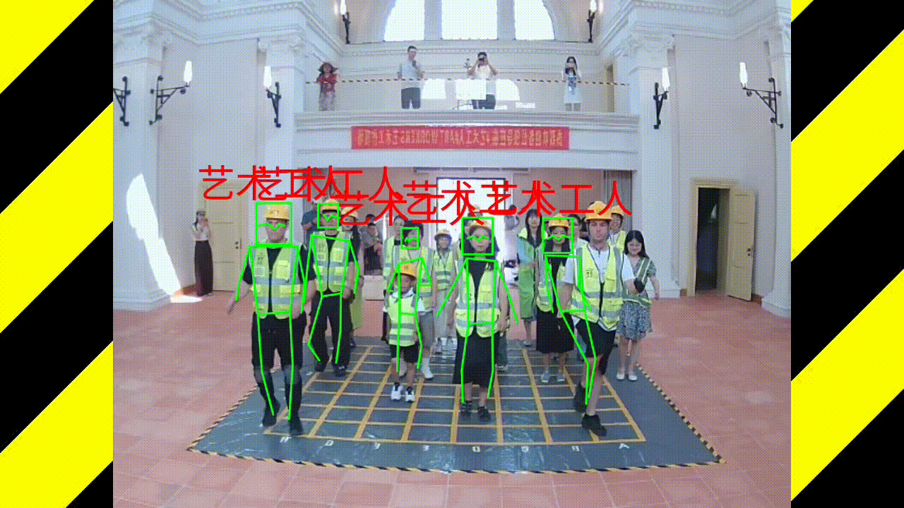
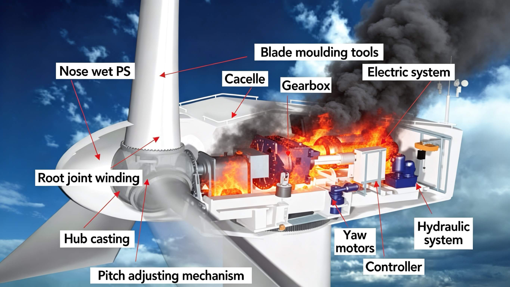
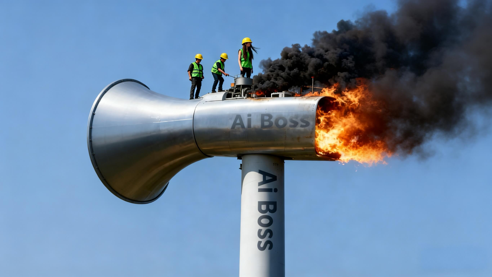
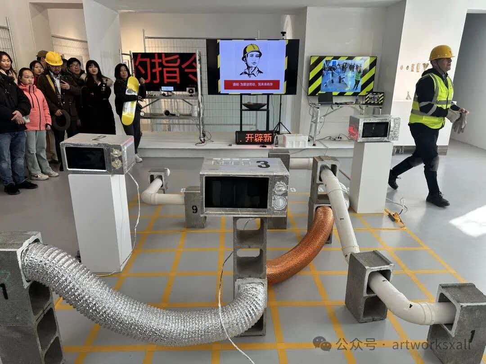
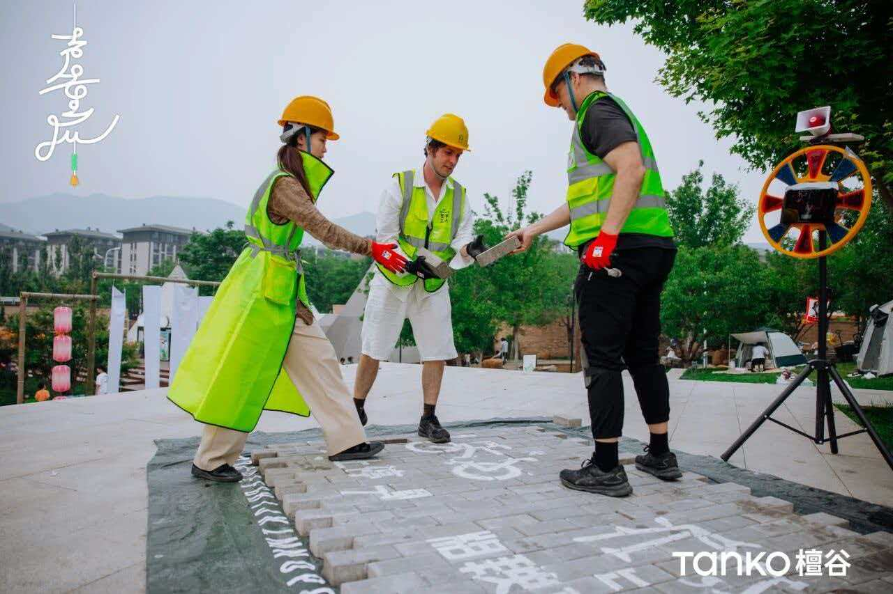
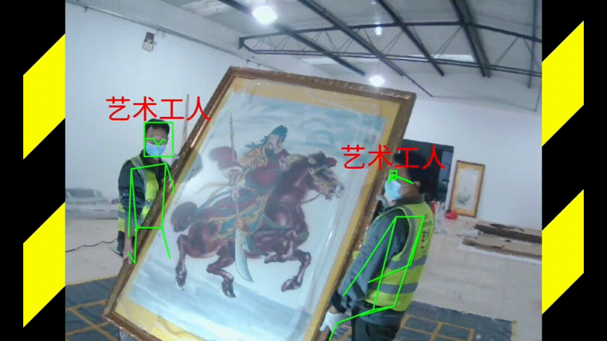

The Birth of the AI Boss
AI老板的诞生
Art · AI · Labor · Systems ｜ 艺术 · 人工智能 · 劳动 · 系统

这个讲座围绕一个我们创造的角色——“AI老板”。它诞生于一系列行为、装置与技术实验，并源于一个问题：当权威开始听起来像机器时，意义与自由会发生什么？
Daan Kous (19) & Arjan Kortus (21) — 2013
2013年荷兰风力发电机火灾
Impossible Choice ｜ 不可能的选择
2013年，两名年轻的电气工程师爬上约80米高的风力发电机进行例行维护。短路引发机舱起火，唯一的出口被阻断，他们无法逃生。人们称之为“一个不可能的选择”。
Belief Without an Exit
没有出口的信念
Maintenance · Progress · Risk ｜ 维护 · 进步 · 风险

令我们难以忘怀的不只是火灾，而是他们正在“维护未来”。绿色能源象征进步与责任，但在结构内部，它仍然是高压、电力与机械构成的重工业系统。
The Promise Structure
承诺的结构
Clean · Natural · Inevitable ｜ 洁净 · 自然 · 不可避免
我们看到人工智能同样被描述为洁净、智能且不可避免。但在界面之下，是庞大的基础设施：数据中心、电力、人类劳动与资本。当我们不再注意机器时，系统看起来就最“自然”。
Art Workers on a Burning Megaphone
燃烧的扩音喇叭上的艺术工人
Instruction · Authority · Amplification ｜ 指令 · 权威 · 放大

我们用扩音喇叭替代风机，因为人工智能不仅生产“智能”，也生产“指令”。扩音喇叭放大权威，把建议变为命令——既荒诞，又准确。
The AI Boss
AI老板
Observe · Speak · Evaluate · Command ｜ 观察 · 发声 · 评估 · 命令

“AI老板”是贯穿我们多个项目的角色——一个能够观察、发声、评估并下达命令的系统。它始于一个实验：当机器在艺术作品中扮演管理者，会发生什么？
Urban Palimpsest — Beijing, 2024
《都市重写》— 北京，2024
200+ Bricks · Algorithms · Obedience ｜ 200多块砖 · 算法 · 服从

该装置使用200多块涂绘的建筑砖，排列成类似城市临时指示的图案。Python脚本通过Fisher–Yates算法生成交换指令，并被朗读出来。我们这些“艺术工人”严格执行这些命令——规则是随机的，而服从是绝对的。
From Rules to Perception
从规则到感知
Vision · Language · Body Data ｜ 视觉 · 语言 · 身体数据
在后续作品中，AI老板获得了“感知”。重新训练的MobileNet通过实时摄像头分类骨头、工具、钢材与工人；大语言模型实时生成指令；姿态追踪将身体转化为坐标系统——可读取、可比较、可优化。系统不再只是指挥劳动，而我们开始书写现实。
The Shock of Language
语言的震撼
Prediction · Meaning · Compression ｜ 预测 · 意义 · 压缩

真正让我们不安的，并不是“超级智能”，而是语言如此迅速地向机器让渡。通过 Transformer
架构与基于海量数据训练的“下一词预测”，这些系统生成的不只是语法，还有一种近似“意义”的东西。如果语言——这个长期被视为人类独特性的边界——可以被统计性复制，这说明了什么？如今，一些模型甚至小到可以在手机上运行。而当语言可以被规模化生产时，说服力也随之扩散——包括落入不良行为者之手。
The Alignment Problem
对齐的问题
Infrastructure · Power · Values ｜ 基础设施 · 权力 · 价值
但更深层的担忧或许不在于系统本身的智能，而在于——谁在控制这台机器，以及他们的价值观是什么。硬件、电网、数据中心与资本结构都不是中性的，它们被优化为规模、速度与利润，而未必指向人类的福祉。而在此之外，还存在尚未解决的“对齐问题”：我们正在建造的系统，其目标可能并不与我们一致。问题不再是我们能否建造它们，而是——我们是否仍然能够引导它们的走向。